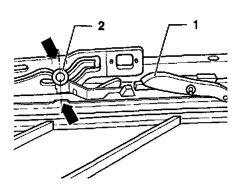
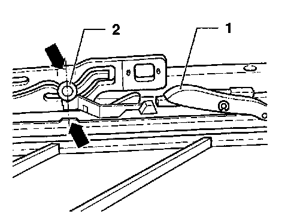

Parallel Alignment
Checking
Sunroof glass panel closed:
- Push sliding headliner back by hand.
- Push trim frame to rear (clipped-on in area of front guide and guided at rear).

Pins 2 must be aligned within marks or notches (arrows), and locating hooks 1 must be engaged in guide rails:
- If pins 2 are not aligned within marks or notches, parallel running must be adjusted.
Adjusting
Sunroof glass panel closed:
- Disconnect battery Ground (GND) strap from battery.
- Push back sliding headliner and trim frame.
- Remove cable drive cover by sliding toward rear (arrow).
- Remove cable drive.
Note: The drive pinion must no longer be in mesh with the cables.

Locating hooks 1 must be engaged in guide rails:
- Slide rear guide pins 2 from front to rear only as far as marks or notches (arrows).
- Install cable drive:
• Always use new self-locking screws.
• Tightening torque: 3 Nm (27 in lb).
- Install sunroof glass panel.